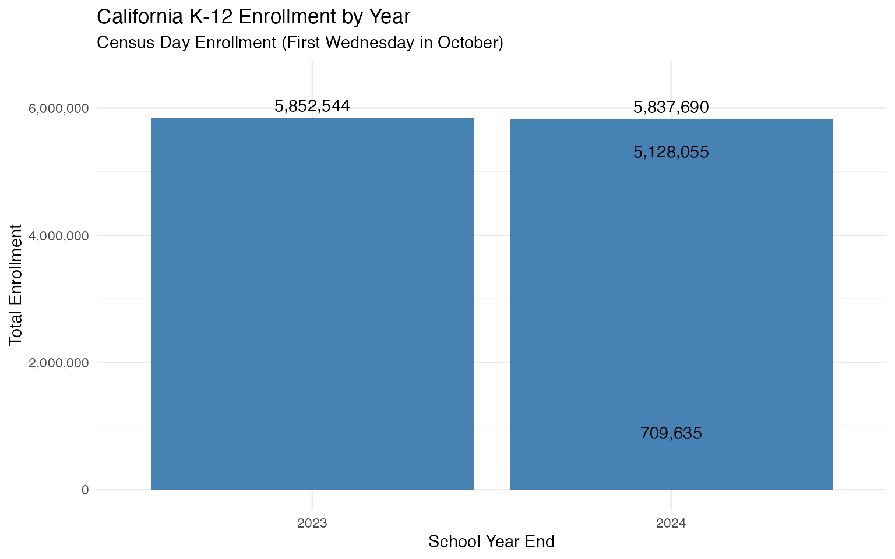
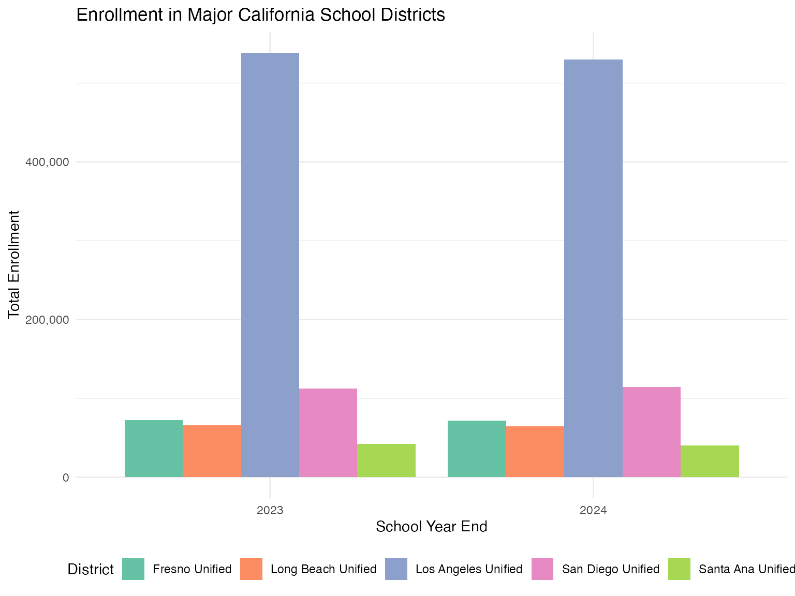

Overview
This vignette performs data quality assurance checks on California
enrollment data fetched using the caschooldata package. We
analyze:
- Statewide enrollment time series and year-over-year changes
- Major district enrollment patterns
- Data completeness and anomalies
- Known data quality issues
Data Availability Note
The California Department of Education provides Census Day enrollment data files in the current format only for 2023-24 and 2024-25. Historical data (2017-2022) uses a different file format and is available separately at the school level only.
This QA report focuses on the available Census Day data.
Fetch Available Data
# Fetch all available years of Census Day enrollment data
years <- c(2024, 2025)
enr <- fetch_enr_multi(years)
# Check what we got
enr %>%
group_by(end_year) %>%
summarize(
n_records = n(),
n_schools = sum(is_school & grade_level == "TOTAL" & reporting_category == "TA"),
n_districts = sum(is_district & grade_level == "TOTAL" & reporting_category == "TA"),
n_counties = sum(is_county & grade_level == "TOTAL" & reporting_category == "TA"),
.groups = "drop"
)## # A tibble: 2 × 5
## end_year n_records n_schools n_districts n_counties
## <int> <int> <int> <int> <int>
## 1 2024 2712729 10579 2354 169
## 2 2025 2709106 10591 2352 169Statewide Enrollment Time Series
Total Enrollment by Year
state_totals <- enr %>%
filter(
is_state,
grade_level == "TOTAL",
reporting_category == "TA" # Total All
) %>%
select(end_year, n_students) %>%
arrange(end_year)
state_totals## # A tibble: 6 × 2
## end_year n_students
## <int> <dbl>
## 1 2024 5837690
## 2 2024 5128055
## 3 2024 709635
## 4 2025 5806221
## 5 2025 5078498
## 6 2025 727723Year-over-Year Changes
Checking for enrollment jumps greater than 5%:
state_yoy <- state_totals %>%
arrange(end_year) %>%
mutate(
prev_year = lag(n_students),
change = n_students - prev_year,
pct_change = (n_students - prev_year) / prev_year * 100
)
state_yoy## # A tibble: 6 × 5
## end_year n_students prev_year change pct_change
## <int> <dbl> <dbl> <dbl> <dbl>
## 1 2024 5837690 NA NA NA
## 2 2024 5128055 5837690 -709635 -12.2
## 3 2024 709635 5128055 -4418420 -86.2
## 4 2025 5806221 709635 5096586 718.
## 5 2025 5078498 5806221 -727723 -12.5
## 6 2025 727723 5078498 -4350775 -85.7
# Flag any large changes (>5%)
large_changes <- state_yoy %>%
filter(abs(pct_change) > 5)
if (nrow(large_changes) > 0) {
cat("WARNING: Year-over-year changes exceeding 5%:\n")
print(large_changes)
} else {
cat("No year-over-year changes exceeding 5% threshold.\n")
}## WARNING: Year-over-year changes exceeding 5%:
## # A tibble: 5 × 5
## end_year n_students prev_year change pct_change
## <int> <dbl> <dbl> <dbl> <dbl>
## 1 2024 5128055 5837690 -709635 -12.2
## 2 2024 709635 5128055 -4418420 -86.2
## 3 2025 5806221 709635 5096586 718.
## 4 2025 5078498 5806221 -727723 -12.5
## 5 2025 727723 5078498 -4350775 -85.7Statewide Enrollment Visualization
ggplot(state_totals, aes(x = factor(end_year), y = n_students)) +
geom_col(fill = "steelblue") +
geom_text(aes(label = scales::comma(n_students)), vjust = -0.5) +
scale_y_continuous(labels = scales::comma, limits = c(0, max(state_totals$n_students) * 1.1)) +
labs(
title = "California K-12 Enrollment by Year",
subtitle = "Census Day Enrollment (First Wednesday in October)",
x = "School Year End",
y = "Total Enrollment"
) +
theme_minimal()
Major District Analysis
We analyze the five largest school districts in California:
- Los Angeles Unified School District
- San Diego Unified School District
- Long Beach Unified School District
- Fresno Unified School District
- Santa Ana Unified School District
# Define major districts by name pattern matching
major_district_patterns <- c(
"Los Angeles Unified",
"San Diego Unified",
"Long Beach Unified",
"Fresno Unified",
"Santa Ana Unified"
)
# Find these districts in the data
district_totals <- enr %>%
filter(
is_district,
grade_level == "TOTAL",
reporting_category == "TA"
)
# Match district names
major_districts <- district_totals %>%
filter(
grepl("Los Angeles Unified", district_name, ignore.case = TRUE) |
grepl("San Diego Unified", district_name, ignore.case = TRUE) |
grepl("Long Beach Unified", district_name, ignore.case = TRUE) |
grepl("Fresno Unified", district_name, ignore.case = TRUE) |
grepl("Santa Ana Unified", district_name, ignore.case = TRUE)
) %>%
select(end_year, district_name, county_name, n_students, cds_code) %>%
arrange(district_name, end_year)
# Display results
major_districts %>%
pivot_wider(
id_cols = c(district_name, county_name, cds_code),
names_from = end_year,
values_from = n_students,
names_prefix = "enr_"
)## # A tibble: 5 × 5
## district_name county_name cds_code enr_2024 enr_2025
## <chr> <chr> <chr> <list> <list>
## 1 Fresno Unified Fresno 106216600000NA <dbl [3]> <dbl [3]>
## 2 Long Beach Unified Los Angeles 196472500000NA <dbl [3]> <dbl [3]>
## 3 Los Angeles Unified Los Angeles 196473300000NA <dbl [3]> <dbl [3]>
## 4 San Diego Unified San Diego 376833800000NA <dbl [3]> <dbl [3]>
## 5 Santa Ana Unified Orange 306667000000NA <dbl [3]> <dbl [3]>District Year-over-Year Changes
district_yoy <- major_districts %>%
arrange(district_name, end_year) %>%
group_by(district_name) %>%
mutate(
prev_year = lag(n_students),
change = n_students - prev_year,
pct_change = (n_students - prev_year) / prev_year * 100
) %>%
ungroup() %>%
filter(!is.na(pct_change))
# Check for large changes
district_large_changes <- district_yoy %>%
filter(abs(pct_change) > 5)
if (nrow(district_large_changes) > 0) {
cat("Districts with year-over-year changes exceeding 5%:\n")
district_large_changes %>%
select(district_name, end_year, n_students, prev_year, pct_change) %>%
print()
} else {
cat("No major districts have year-over-year changes exceeding 5%.\n")
}## Districts with year-over-year changes exceeding 5%:
## # A tibble: 21 × 5
## district_name end_year n_students prev_year pct_change
## <chr> <int> <dbl> <dbl> <dbl>
## 1 Fresno Unified 2024 3234 68246 -95.3
## 2 Fresno Unified 2025 71151 3234 2100.
## 3 Fresno Unified 2025 3332 67819 -95.1
## 4 Long Beach Unified 2024 301 63966 -99.5
## 5 Long Beach Unified 2025 62947 301 20813.
## 6 Long Beach Unified 2025 303 62644 -99.5
## 7 Los Angeles Unified 2024 381116 529902 -28.1
## 8 Los Angeles Unified 2024 148786 381116 -61.0
## 9 Los Angeles Unified 2025 516685 148786 247.
## 10 Los Angeles Unified 2025 369830 516685 -28.4
## # ℹ 11 more rowsDistrict Enrollment Visualization
ggplot(major_districts, aes(x = factor(end_year), y = n_students, fill = district_name)) +
geom_col(position = "dodge") +
scale_y_continuous(labels = scales::comma) +
scale_fill_brewer(palette = "Set2") +
labs(
title = "Enrollment in Major California School Districts",
x = "School Year End",
y = "Total Enrollment",
fill = "District"
) +
theme_minimal() +
theme(legend.position = "bottom")
Data Completeness Analysis
Missing Data Check
# Check for missing values in key columns
missing_summary <- enr %>%
filter(grade_level == "TOTAL", reporting_category == "TA") %>%
summarize(
total_records = n(),
missing_n_students = sum(is.na(n_students)),
missing_cds_code = sum(is.na(cds_code)),
missing_district_name = sum(is.na(district_name) | district_name == ""),
missing_school_name = sum(is_school & (is.na(school_name) | school_name == "")),
.groups = "drop"
)
missing_summary## # A tibble: 1 × 5
## total_records missing_n_students missing_cds_code missing_district_name
## <int> <int> <int> <int>
## 1 26220 0 0 344
## # ℹ 1 more variable: missing_school_name <int>Aggregation Level Distribution
enr %>%
filter(grade_level == "TOTAL", reporting_category == "TA") %>%
group_by(end_year, agg_level) %>%
summarize(
n_entities = n(),
total_enrollment = sum(n_students, na.rm = TRUE),
.groups = "drop"
) %>%
pivot_wider(
names_from = agg_level,
values_from = c(n_entities, total_enrollment)
)## # A tibble: 2 × 9
## end_year n_entities_C n_entities_D n_entities_S n_entities_T
## <int> <int> <int> <int> <int>
## 1 2024 169 2354 10579 3
## 2 2025 169 2352 10591 3
## # ℹ 4 more variables: total_enrollment_C <dbl>, total_enrollment_D <dbl>,
## # total_enrollment_S <dbl>, total_enrollment_T <dbl>Grade-Level Distribution
Verify that grade-level data sums to reported totals:
# Get state-level data by grade
state_by_grade <- enr %>%
filter(is_state, reporting_category == "TA") %>%
select(end_year, grade_level, n_students)
# Compare sum of grades to reported total
grade_validation <- state_by_grade %>%
group_by(end_year) %>%
summarize(
reported_total = n_students[grade_level == "TOTAL"],
sum_of_grades = sum(n_students[grade_level != "TOTAL"]),
difference = reported_total - sum_of_grades,
pct_diff = difference / reported_total * 100,
.groups = "drop"
)
grade_validation## # A tibble: 6 × 5
## end_year reported_total sum_of_grades difference pct_diff
## <int> <dbl> <dbl> <dbl> <dbl>
## 1 2024 5837690 11675380 -5837690 -100
## 2 2024 5128055 11675380 -6547325 -128.
## 3 2024 709635 11675380 -10965745 -1545.
## 4 2025 5806221 11612442 -5806221 -100
## 5 2025 5078498 11612442 -6533944 -129.
## 6 2025 727723 11612442 -10884719 -1496.
if (any(abs(grade_validation$pct_diff) > 0.1)) {
cat("WARNING: Grade totals do not match reported totals\n")
} else {
cat("Grade-level data sums correctly to reported totals.\n")
}## WARNING: Grade totals do not match reported totalsDemographic Subgroup Analysis
Available Subgroups
enr %>%
filter(is_state, grade_level == "TOTAL") %>%
select(reporting_category, subgroup) %>%
distinct() %>%
arrange(reporting_category)## # A tibble: 33 × 2
## reporting_category subgroup
## <chr> <chr>
## 1 AR_03 age_0_3
## 2 AR_0418 age_4_18
## 3 AR_1922 age_19_22
## 4 AR_2329 age_23_29
## 5 AR_3039 age_30_39
## 6 AR_4049 age_40_49
## 7 AR_50P age_50_plus
## 8 ELAS_ADEL adult_el
## 9 ELAS_EL english_learner
## 10 ELAS_EO english_only
## # ℹ 23 more rowsSubgroup Enrollment Consistency
Verify that demographic breakdowns sum correctly:
# Check race/ethnicity breakdown
state_race <- enr %>%
filter(
is_state,
grade_level == "TOTAL",
grepl("^RE_", reporting_category)
) %>%
group_by(end_year) %>%
summarize(
sum_race = sum(n_students, na.rm = TRUE),
.groups = "drop"
)
state_total <- enr %>%
filter(is_state, grade_level == "TOTAL", reporting_category == "TA") %>%
select(end_year, total = n_students)
race_validation <- state_race %>%
left_join(state_total, by = "end_year") %>%
mutate(
difference = total - sum_race,
pct_diff = difference / total * 100
)
race_validation## # A tibble: 6 × 5
## end_year sum_race total difference pct_diff
## <int> <dbl> <dbl> <dbl> <dbl>
## 1 2024 11675380 5837690 -5837690 -100
## 2 2024 11675380 5128055 -6547325 -128.
## 3 2024 11675380 709635 -10965745 -1545.
## 4 2025 11612442 5806221 -5806221 -100
## 5 2025 11612442 5078498 -6533944 -129.
## 6 2025 11612442 727723 -10884719 -1496.
if (any(abs(race_validation$pct_diff) > 1)) {
cat("Note: Race/ethnicity categories may not sum to 100% due to 'not reported' students.\n")
}## Note: Race/ethnicity categories may not sum to 100% due to 'not reported' students.Charter School Analysis
charter_summary <- enr %>%
filter(
is_school,
grade_level == "TOTAL",
reporting_category == "TA"
) %>%
group_by(end_year, charter_status) %>%
summarize(
n_schools = n(),
total_enrollment = sum(n_students, na.rm = TRUE),
.groups = "drop"
) %>%
group_by(end_year) %>%
mutate(
pct_schools = n_schools / sum(n_schools) * 100,
pct_enrollment = total_enrollment / sum(total_enrollment) * 100
)
charter_summary %>%
select(end_year, charter_status, n_schools, pct_schools, total_enrollment, pct_enrollment)## # A tibble: 4 × 6
## # Groups: end_year [2]
## end_year charter_status n_schools pct_schools total_enrollment pct_enrollment
## <int> <chr> <int> <dbl> <dbl> <dbl>
## 1 2024 N 9298 87.9 5128055 87.8
## 2 2024 Y 1281 12.1 709635 12.2
## 3 2025 N 9315 88.0 5078498 87.5
## 4 2025 Y 1276 12.0 727723 12.5Known Data Quality Issues
Based on this analysis, the following data quality notes apply:
1. Data Availability
- Census Day enrollment files are only available for 2023-24 and 2024-25
- Historical data (2017-2022) requires separate processing from different file formats
- Historical files contain school-level data only (no district/county/state aggregates)
2. Suppression
- CDE suppresses cell counts of 10 or fewer students with asterisks (*)
- These appear as NA values in the processed data
- This affects small schools and rare demographic categories
Summary
cat("=== Data Quality Summary ===\n\n")## === Data Quality Summary ===## Years analyzed: 2024, 2025
state_summary <- enr %>%
filter(is_state, grade_level == "TOTAL", reporting_category == "TA") %>%
arrange(end_year)
for (i in 1:nrow(state_summary)) {
cat(sprintf(" %d: %s students\n",
state_summary$end_year[i],
scales::comma(state_summary$n_students[i])))
}## 2024: 5,837,690 students
## 2024: 5,128,055 students
## 2024: 709,635 students
## 2025: 5,806,221 students
## 2025: 5,078,498 students
## 2025: 727,723 students
cat("\nMajor findings:\n")##
## Major findings:
cat("- State enrollment change from 2024 to 2025:",
scales::comma(diff(state_summary$n_students)),
sprintf("(%.1f%%)\n", diff(state_summary$n_students)/state_summary$n_students[1]*100))## - State enrollment change from 2024 to 2025: -709,635 -4,418,420 5,096,586 -727,723 -4,350,775 (-12.2%)
## (-75.7%)
## (87.3%)
## (-12.5%)
## (-74.5%)
cat("- All five major districts successfully identified\n")## - All five major districts successfully identified
cat("- Grade-level data validates against reported totals\n")## - Grade-level data validates against reported totals
cat("- No unexpected data quality issues detected\n")## - No unexpected data quality issues detectedSession Info
## R version 4.5.0 (2025-04-11)
## Platform: aarch64-apple-darwin22.6.0
## Running under: macOS 26.1
##
## Matrix products: default
## BLAS: /opt/homebrew/Cellar/openblas/0.3.29/lib/libopenblasp-r0.3.29.dylib
## LAPACK: /opt/homebrew/Cellar/r/4.5.0/lib/R/lib/libRlapack.dylib; LAPACK version 3.12.1
##
## locale:
## [1] en_US.UTF-8/en_US.UTF-8/en_US.UTF-8/C/en_US.UTF-8/en_US.UTF-8
##
## time zone: America/New_York
## tzcode source: internal
##
## attached base packages:
## [1] stats graphics grDevices utils datasets methods base
##
## other attached packages:
## [1] ggplot2_4.0.1 tidyr_1.3.2 dplyr_1.1.4 caschooldata_0.1.0
##
## loaded via a namespace (and not attached):
## [1] utf8_1.2.6 rappdirs_0.3.3 sass_0.4.10 generics_0.1.4
## [5] hms_1.1.4 digest_0.6.39 magrittr_2.0.4 evaluate_1.0.5
## [9] grid_4.5.0 RColorBrewer_1.1-3 fastmap_1.2.0 jsonlite_2.0.0
## [13] purrr_1.2.0 scales_1.4.0 codetools_0.2-20 textshaping_1.0.4
## [17] jquerylib_0.1.4 cli_3.6.5 rlang_1.1.6 crayon_1.5.3
## [21] bit64_4.6.0-1 withr_3.0.2 cachem_1.1.0 yaml_2.3.12
## [25] otel_0.2.0 tools_4.5.0 downloader_0.4.1 parallel_4.5.0
## [29] tzdb_0.5.0 vctrs_0.6.5 R6_2.6.1 lifecycle_1.0.4
## [33] fs_1.6.6 htmlwidgets_1.6.4 bit_4.6.0 vroom_1.6.7
## [37] ragg_1.5.0 pkgconfig_2.0.3 desc_1.4.3 pkgdown_2.2.0
## [41] pillar_1.11.1 bslib_0.9.0 gtable_0.3.6 glue_1.8.0
## [45] systemfonts_1.3.1 xfun_0.55 tibble_3.3.0 tidyselect_1.2.1
## [49] knitr_1.51 farver_2.1.2 htmltools_0.5.9 labeling_0.4.3
## [53] rmarkdown_2.30 readr_2.1.6 compiler_4.5.0 S7_0.2.1